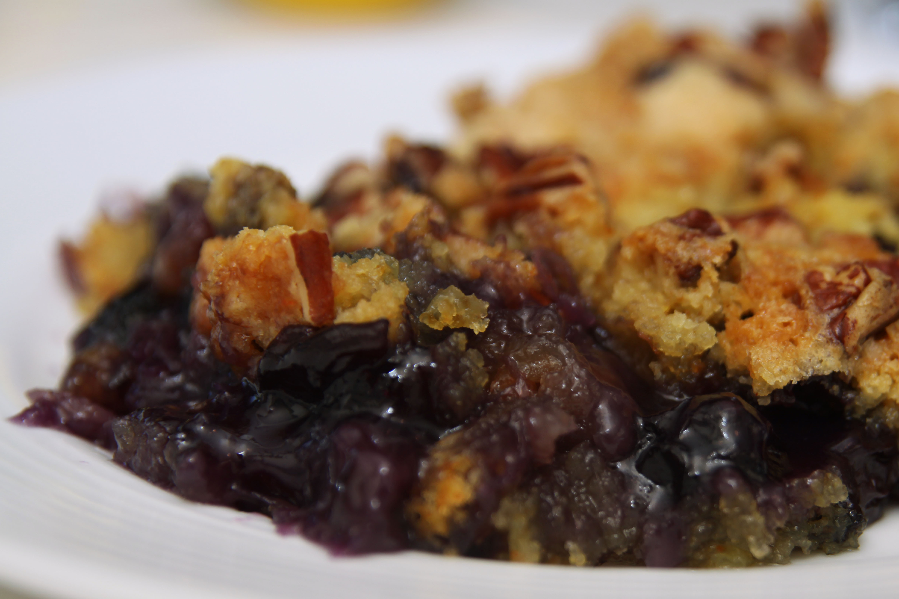

Slow Cooker Dump Cake

blueberry dump cake plate flickr photo by
Southern Fairytale (Rachel)
Description
A dump cake is the most care free, easy desert to make. Top it with some vanilla ice cream, for a cobbler-like treat.
Ingredients
- 1 box of white cake mix
- 2 sticks of Butter
- 1 cup of Fresh or frozen blueberries
- 1 can of blueberry pie filling
Steps
- Grease the slow cooker
- Pour the can of blueberry pie filling in the bottom
- Spread the cake mix evenly over the pie filling, do not follow the cake mix instructions
- sprinkle in 1 cup of fresh or frozen blueberies
- Top with slices of butter until the entire top is covered
- Allow to cook on high for 2 to 4 hours
- Serve with vanilla ice cream or fresh whipped cream